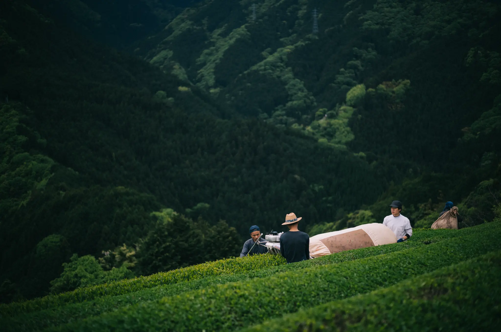
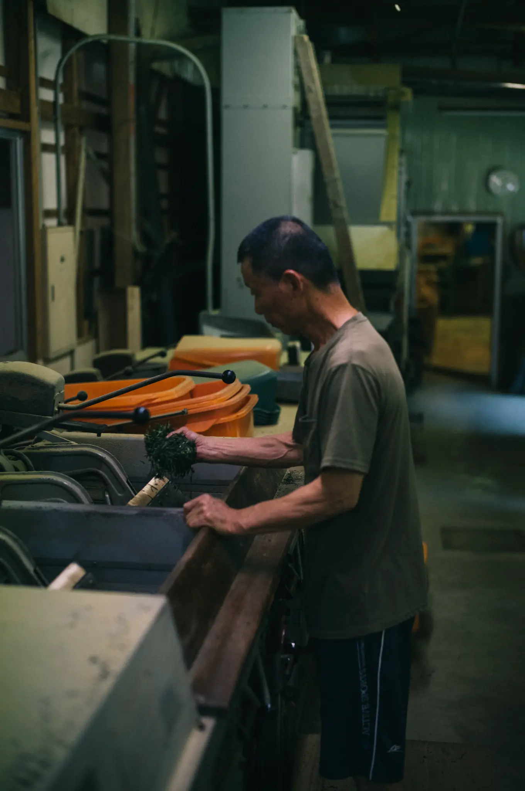

心技体、どれも駆使して作られる本物のお茶

お茶作りとは、ただ作物を育てることではありません。作り手の「心・技・体」すべてを限界まで駆使して、初めて出来上がる至高の芸術です。徳島県山城町の山間部、標高200mから500mの間に点在する曲風園の茶畑。一度転がり落ちたら止まれないほどの急傾斜地であり、一年を通して冷涼で過酷な斜面は、激しい寒暖差によって吉野川から立ち込める「深い朝露（朝霧）」に包まれます。
朝露がもたらす『出汁のような旨味』

この朝露が天然のサンシェードの役割を果たし、茶葉を強い日差しから守ることで、渋みが抑えられます。そうして凝縮されたお茶を急須で淹れると、まるできれいに澄んだ「出汁（だし）のような深い旨味」と、スッキリとした清らかな香りが広がり、誰もがその圧倒的な高級感にハッとするはずです。
無農薬・低温浅蒸しの伝統技法

曲風園のお茶づくりは、自然環境に一切の負担をかけない「農薬を一切使用しない栽培（無農薬）」を頑なに貫いています。大量生産はできませんが、一芯二葉で摘まれた希少な一番茶のポテンシャルを100%活かしています。四国の山間地伝統の「浅蒸し」で酸化を止め、低い温度で時間をかけて丁寧に「火入れ」を行うことで、高温の機械生産では焼き飛んでしまう、茶葉本来のデリケートな風味と清らかな香りをそのまま残した至高のクラフト緑茶です。